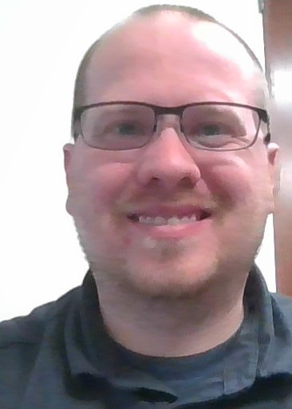

Summary

Looking to persue further development and growth in becoming a full stack developer.
Education
- B.S in Information Technology and Cyber Security
- ITT Technical Institute, 2012-2015
Work Experience
- Field Technician - SourcePass
May 2021 to Present
- Answer Service Desk calls
- Create Accounts for Onboardings
- De-activate accounts per clients requests
- Go on-site to troubleshoot networks that are down
- Deploy laptops to clients to help with workstation setups
- Stay up-to date on Security for specific clients
- Assist with Troubleshooting Servers
- Assist with Escalations that need more digging into Issues
- Help T1's with clients and train on issues not come across before
- Get clients setup with Azure and being joined to the cloud
- Help Project Managers and Executives with Projects that would impact 50-100+ users.
- Migrate users from
- IT Technician - Monarch Casino Resort Spa
July 2019 to May 2021
- System Check with AS400
- Troubleshoot Player Card Printers
- Troubleshoot Department Printers
- Replace TV's on Casino Floor
- Update Documentation
- Close ticket submitions
- Desk Setups
- Band Setups
- Assist with new user setups
- Wipe machines to be re-used
- Continuous training on new systems
- Work on POS systems at Bars and restaurants
- Collections Manager - PBCM
July 2018 to July 2019
- Help peope get on a rehab program
- Send people to Garnishment if unable to reach
- Explain why taxes were taken
- Lead a team of agents
Skills
- Basic HTML Development
- Customer Service
- Office 365
- Basic Google Searching
- Troubleshooting
- Active Listening
- Basic Cloud Deployment
Awards, Certs or Achievements
- MS-900
- FF Level 2 (120 hrs)
- CPR Certified